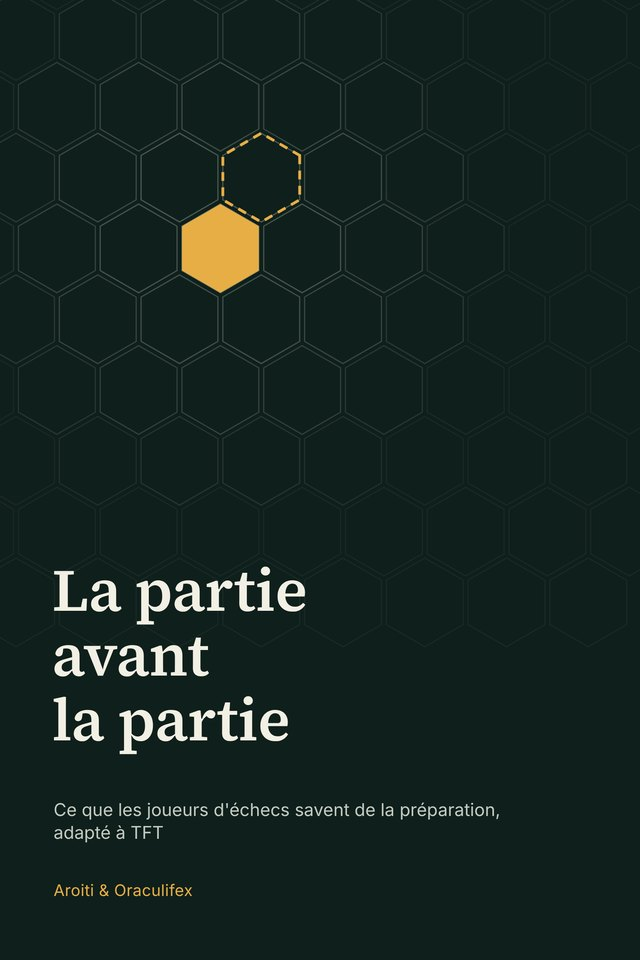

Nouveau
La partie avant la partie
Ce que les joueurs d’échecs savent de la préparation, adapté à Teamfight Tactics
Aux échecs, une partie se joue souvent avant le premier coup. Ce petit essai emprunte aux joueurs d’échecs un siècle de préparation et l’adapte à TFT : ton répertoire, l’étude, le jour J, la partie et l’analyse d’après.
Télécharger l’EPUBTélécharger le PDF
Gratuit, sans inscription. 31 pages.
